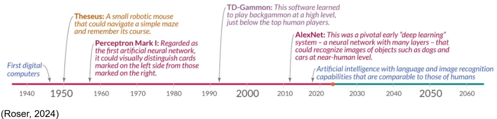
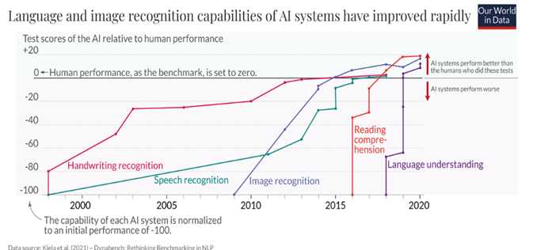
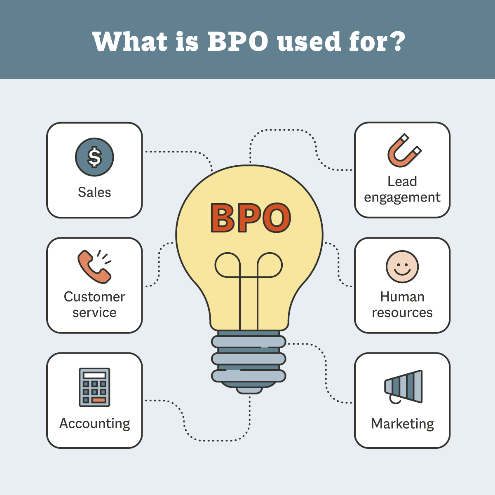
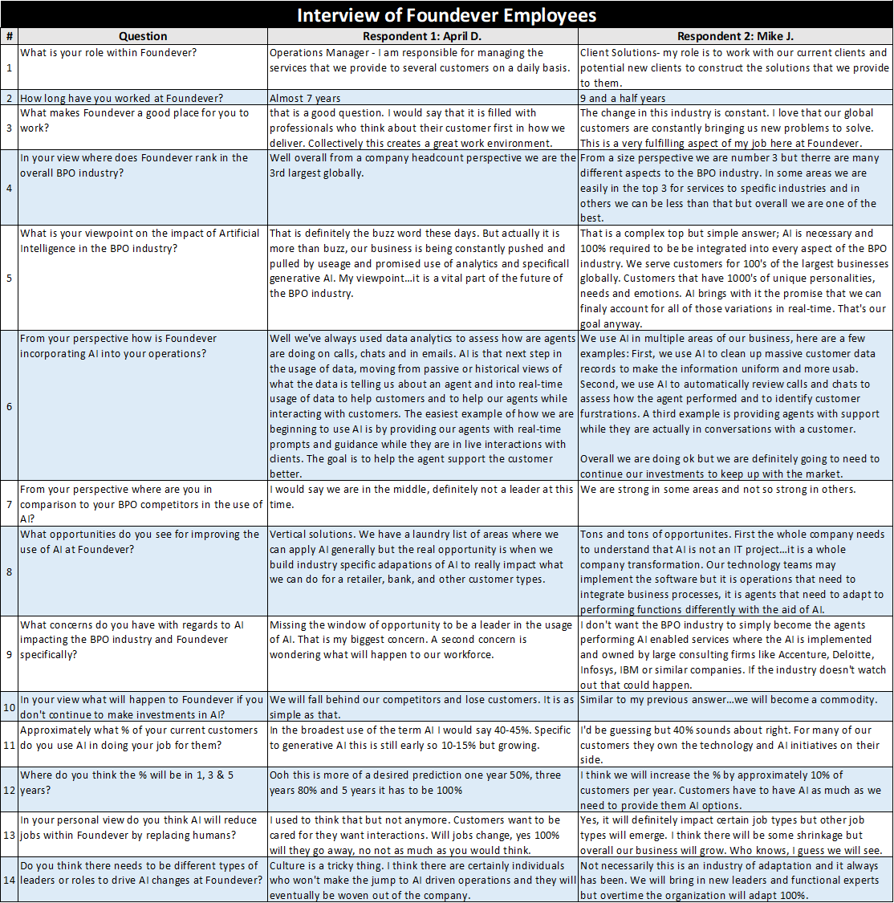
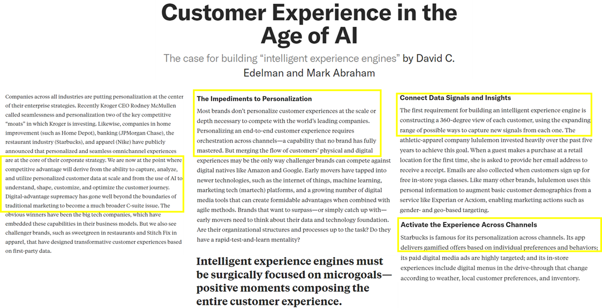
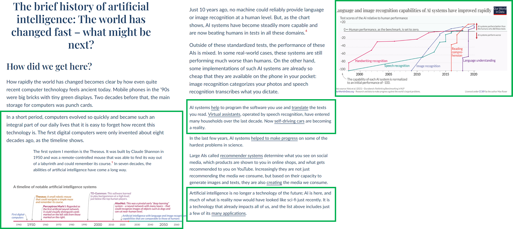
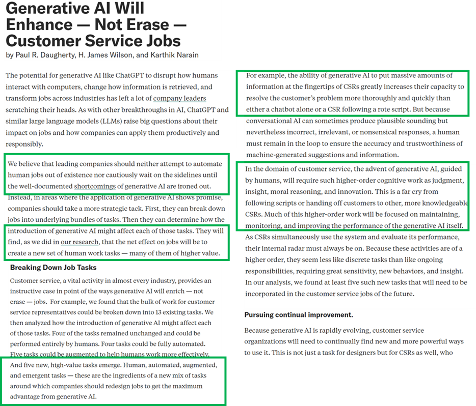

AI and the Customer Experience
Evaluating its impact on engagement, personalization, and business effectiveness at Foundever
Abstract
Artificial intelligence (AI) is reshaping how companies engage customers, personalize service, and manage costs. For business process outsourcing (BPO) providers that deliver customer experience (CX) on behalf of clients, this is beginning to pose a threat. This report asks how AI might change customer engagement, personalization, and business effectiveness for BPO companies such as Foundever. It uses interviews with two Foundever leaders, an Operations Manager and a Client Solutions leader, and industry, academic, and company sources. The interviews show that leaders view AI as unavoidable and worry that competitor companies are integrating it faster. The secondary research suggests that client companies are increasingly looking to BPOs for AI-based services, that AI can strengthen personalization when built on well-integrated and responsibly handled data, and that AI which assists human agents improves engagement and productivity more reliably than AI that replaces them. Sources disagree about the effect on jobs, and the interviewees did not address how agent roles would change. The report recommends that Foundever prioritize agent-assisting AI, build personalization on its omnichannel data with clear safeguards, develop its leaders, and redesign roles around human-AI collaboration.
Key terms: “AI" covers several tools, including analytics, chatbots that automate interactions, and generative AI that assists human agents. "Engagement" refers to how customers respond to service (for example, politeness and requests to escalate to a manager), "personalization" to tailoring service using customer data.
Introduction
Foundever (Formerly Sitel, rebranded in March of 2023) is a global business process outsourcing (BPO) company that provides customer care and technical support services. It is headquartered in Luxembourg city, Luxembourg, and it employs 170,000 agents across 45 countries (Foundever, 2026).
The BPO industry is being reshaped by advances in artificial intelligence (AI), which are changing how companies engage with customers, personalize service, and manage costs (Edelman & Abraham, 2022). These shifts matter to the companies, to the agents who do the work, and to customers. This report is written for readers in the CX outsourcing industry who want to understand these trade-offs before forming their own conclusions. It asks: How might AI change customer engagement, personalization, and business effectiveness for BPO companies such as Foundever? It answers this through interviews with two Foundever leaders and a comparison of industry, academic, and company sources.
Methodology
Primary data came from two interviews conducted on (October 3, 2026), with an Operations Manager (April D.) and a Client Solutions leader (Mike J.), they are both current Foundever employees. The interviews explored Foundever’s operations, its existing use of AI, and its future direction. Their responses are treated as individual perspectives rather than official company positions. Because both participants are employees, their views may favor the company, and two interviews cannot represent the whole organization.
Secondary data was drawn from industry, academic, and company sources. Industry sources include McKinsey & Company (Buesing et al., 2024) and Harvard Business Review (Edelman & Abraham, 2022; Daugherty et al., 2023). Peer-reviewed research includes (Byrnjolfsson et al., 2025) on AI’s effect on customer-support productivity and (Arora, 2025) on how AI changes service work. (Roser, 2024) provides background on the development of AI, and Foundever’s website provides company information.
Main Research & Findings
A Brief Background on the Evolution of AI
Since 1956, when the field of AI was formally established, there have been significant advances beyond its original aim of simulating human intelligence in machines (Roser,2024). Around 1990, AI development accelerated as greater computing power made it possible to process much larger data sets, and at the turn of the century there was an even bigger jump in both computing power and data availability (Roser,2024). Around 2010, advances in neural networks and deep learning enabled major progress in image processing and speech recognition. It was not until around 2019 and 2020 that AI reached a level of language understanding strong enough to be practical for customer service work (Roser, 2024). (Figure 1) shows how quickly the computing power used to train AI systems has grown across this period.


Huang and Rust (2018) describe four types of intelligence used by AI: mechanical, analytical, intuitive, and empathetic intelligence. They argue that AI will initially take over repetitive and mechanical tasks before taking on more complex tasks. When AI is introduced to the customer care industry its mechanical intelligence does the repetitive work that Human agents don't need to be there to do such as password resets or payment collection. Its analytical intelligence recognizes patterns in customer data it receives, by using this data it could predict why customers are contacting the company for support. It uses its intuitive and empathic intelligence to understand why a customer may be frustrated or calming them down. Human agents still lead in this area as few people are going to believe an AI understands their frustration. Current CX utilises chatbots, automated responses, agent support, and analytics (Buesing et al., 2024), doing work mostly in the mechanical and analytical categories.


The Role of BPO Companies


A large part of Customer experience (CX) is customer support. This matters to companies because it is what builds trust and loyalty between the company and its customers which keeps revenue coming in. Many companies deliver CX by partnering with business process outsourcing (BPO) companies who specialize in customer care and help clients reduce costs while introducing advancements in CX (Buesing et al., 2024). McKinsey’s survey of more than 340 customer care leaders found that outsourcing relationships now extend well beyond traditional call and email handling (Buesing et al., 2024). This means that BPO companies are in charge of changing how customers see their clients' brands.
Foundever illustrates how this role has grown. It began its journey in 1985 by providing phone support and has since expanded into chat, email, social media, and other channels as the requirements for customer communication have evolved(Foundever, 2026). Because so much of this work is routine, high-volume, and data-rich, it is the kind of work AI is best placed to change (Huang & Rust, 2018). At the same time, the scale that makes Foundever a useful case also raises the stakes. Decisions about AI affect not only Foundever’s clients and customers but also a very large workforce, and research on outsourced automation shows that people often remain behind services presented as automated (Iantorno et al., 2022).
Primary Source: Interview with Foundever Employees
Two leaders at Foundever were interviewed for this report, an Operations Manager (April D.) and a Client Solutions leader (Mike J.), as they were interviewed three patterns stood out from their responses. I note where they agreed, where their opinion differed, and how their views compare with the secondary sources.
Question Set 1: Foundever’s Current AI Usage & Position in BPO
Both interviewees see an AI-assisted future as unavoidable if Foundever wants to keep up with its competition, as competitors are using it and because it enables different kinds of services. April described this as “ a step towards a more connected and integrated support system”, while Mike framed it more in terms of “changing how we move forward with fulfilling client needs at a lower cost”. Both described Foundever as about average in its use of AI compared with competitors (Interview Questions 5, 6, and 7).
The assessment from them is consistent with McKinsey's description of customer care leaders as still having to "prepare their companies for an AI-enabled future" (Buesing et al., 2024), which suggests Foundever's position is typical of the industry rather than lagging behind.
Question Set 2: Opportunities & Concerns with using AI
Both see opportunities for growth in new client bases but worry that competitors are moving faster and that the window of opportunity may close (Interview Questions 8, 9, and 10). Their concern mirrors that of Edelman and Abraham's (2022) argument that the advantages of AI will go to companies that reshaped its structure to use AI at large.
Question Set 3: Exploring the Future of AI at Foundever
Third, both leaders expect their usage of AI across clients to increase over the next few years. To accomplish this they said current leaders will need to either adapt their skills for AI or to be joined by new leaders (Interview Questions 11 to 14). I also asked whether they were worried that agents would lose their jobs because of AI, and both said no. Their reasons were that AI is currently handling the mechanical and analytical work, demand is growing, and that agents are being moved to other projects.
These answers are the most revealing in the interviews as they align with the ideas of Daugherty et al. (2023), who argue that AI will enhance customer service jobs by automating repetitive tasks and freeing agents for more complex work. But they also contradict the ideas of Huang and Rust (2018) who warn that AI may progress into increasingly complex service tasks and threaten some jobs, and with Iantorno et al. (2022), who show that systems presented as automated often still rely on hidden human labor.
How the interviews fit the secondary research
The interviews confirm the secondary research on demand and on the pace of competition. They complicate it in the workforce, where leaders are confident and the literature is divided. And they leave two questions unanswered that the secondary research raises: how Foundever would handle customer data and trust, and how agents themselves would be affected. These gaps shape the recommendations at the end of the report.
Secondary Research
My secondary research is focused on three areas related to whether Foundever should adapt its business model to use more AI in delivering CX services:
- Demand for AI and the Role of BPOs
- Personalization
- Engagement
Demand for AI and the Role of BPOs
Large companies are treating AI as a source of advantage and look to BPOs to deliver it. Edelman and Abraham (2022) interviewed leaders from companies including Starbucks, JPMorgan Chase, and Nike. They concluded that “We are now at the point where competitive advantage will derive from the ability to capture, analyze, and utilize personalized customer data at scale and from the use of AI to understand, shape, customize, and optimize the customer journey” (Edelman & Abraham, 2022). Whether companies deliver CX themselves or through a BPO partner, they are going to need to use AI to streamline the collection and understanding of customer data across all channels.
Keeping up is difficult. “Customer care leaders are facing their greatest challenge in decades. They must prepare their companies for an AI-enabled future” (Buesing et al., 2024). Adding AI means choosing the right technology, having employees who can use it, and making sure the organization actually acts on its outputs. That burden helps explain the next step in McKinsey's survey of more than 340 customer care leaders, which found that “outsourcing relationships are becoming deeper too…for a range of activities that extends far beyond traditional call and email handling… including AI-based customer care tools” (Buesing et al., 2024).
Personalization
Sources agree that AI can automate services for customers but that the customers' trust limits how far that automation can go, but only one source measures what is happening to customers. Edelman and Abraham (2022) report that AI can tailor interactions using customer preferences, behavior, and previous interactions, and can help predict customer needs. Arora (2025) similarly describes how machine learning, natural language processing, and predictive analytics let businesses tailor service to individual customers across industries. Arora’s paper is a working paper and has not been peer reviewed, so it is used here only as supporting context. Both sources also note that personalization depends on handling customer data responsibly and on integrating AI with existing systems, which can be technically and operationally difficult. Foundever’s omnichannel model may give it a possible advantage here as it already connects customer interactions across phone, email, chat, and social media (Foundever, 2026).
Personalization also carries risks that go beyond technical integration. Using customer data to tailor service raises privacy questions including what data is collected, how long it is kept, how it is used, and whether customers know it is being used. Edelman and Abraham (2022) and Arora (2025) both stress responsible data handling is pertinent for customer trust. For a BPO such as Foundever the stakes are higher as it handles data on behalf of its clients, so a failure affects both Foundever's reputation and its clients'. A second risk that comes from this is bias. If a model learns from past interactions that were not handled correctly it may reproduce the same results, so risks of personalization is that it may serve some customers better than others. A third concern is transparency, customers should be able to knowl when they are dealing with an automated system and have the ability to connect with a human agent. Foundever's omnichannel model gives it an advantage in connecting customer data, but that advantage only has value if the data is handled in ways customers are willing to accept.
Engagement
The McKinsey report found that customers still value speaking with real people even as digital resources grow (Buesing et al., 2024). Edelman and Abraham (2022) warn that companies must balance automation with human interaction and Arora (2025) notes that trust affects whether people accept and keep using AI-powered services.
The measured evidence comes from that of Brynjolfsson et al. (2025), whose study followed thousands of customer-support agents as a generative AI assistant was introduced. The assistant suggested responses and guidance to agents while they were working with customers. The study found that AI assistants increased productivity, and that the gains were largest for newer and less experienced agents. It also found that customers who interacted with AI-assisted agents were more polite and less likely to ask for a manager. This supports the recommendation that Foundever use AI to help newer agents improve faster.
Emerging Themes and Analysis
Efficiency versus human connection. It is the issue that business leaders are facing in today's BPO industry. AI-assisted agents produced more “polite” customer interactions and higher productivity (Brynjolfsson et al., 2025), and customers still value speaking with human agents (Buesing et al., 2024). Yet costs are pushing outsourcing companies to automate CX as much as possible. Foundever and its clients must decide where that line sits, and the evidence supports drawing it where AI supports human agents, not where it replaces them.
Leaders' claims versus customer evidence. Much of the evidence for demand is based on what C-suite leaders say. Edelman and Abraham (2022) interviewed business leaders, McKinsey (Buesing et al., 2024) surveyed customer care leaders, and the Foundever interviewees are leaders as well. Only one source, Brynjolfsson et al. (2025), measures actual outcomes. The constant message that AI resources are urgently needed and valuable, is stronger as a statement of leaders in the industry rather than the experience and wants of human agents in the field.
Promise versus the hidden costs. AI is a fast paced and exponential growth industry with new models and roles being created everyday, so how long before humans are no longer needed to fill those roles? Daugherty et al. (2023) describe AI as enhancing jobs, while Huang and Rust (2018) and Iantorno et al. (2022) point to job risk and hidden labor. The interviewees were confident that human agents would not lose their jobs, but they did not describe how roles or conditions would change. The question about AI in CX is not whether it will replace human based roles but how those roles will change.
Conclusion
This report examined how AI may change customer engagement, personalization, and business effectiveness for BPO companies such as Foundever. The interviews show that Foundever's leaders see an AI assisted workforce as inevitable but worry about competitors moving faster. The secondary research shows that companies are looking to BPOs for AI-based services in order to stay competitive.
Recommendations
Foundever should take the following actions.
Prioritize AI that assists agents. This is where the strongest evidence of productivity and customer benefit exists, and it helps newer agents improve faster (Brynjolfsson et al., 2025). Implementation: begin with agent-assist tools in a small number of client programs. Risk: results from one setting may not carry over to others. Measure: resolution time, customer satisfaction, and escalation rates compared with similar programs without the tool.
Build personalization on its omnichannel data, with clear safeguards. Use the connected data across phone, email, chat, and social media, and set clear rules for what customer data is used and how (Edelman & Abraham, 2022). Risk: privacy failures or biased outputs that damage trust. Measure: complaint and opt-out rates, and regular checks of whether service quality differs across customer groups.
Develop its leaders. Both interviewees said leaders must adapt their AI skills or be joined by new leaders. Implementation: AI training for managers and client-facing leaders, tied to the pilots. Measure: the share of leaders who can interpret AI performance data and apply it in decisions.
Redesign roles around human-AI collaboration. Keep human agents for complex and empathetic situations and monitor agents' workload and working conditions (Daugherty et al., 2023; Iantorno et al., 2022). Implementation: involve agents in designing the new workflows. Risk: AI could raise pressure on agents if productivity targets rise without adjustment. Measure: agent satisfaction, turnover, and workload over time.
In summary, Foundever should use its roughly 40 years of experience and its existing market position to invest in AI as a way to assist its human agents, not replace them.
References
Arora, A. (2025, May 23). Enhancing customer experience across multiple business domains using artificial intelligence. SSRN. doi.org/10.2139/ssrn.5268178
Brynjolfsson, E., Li, D., & Raymond, L. (2025). Generative AI at work. The Quarterly Journal of Economics, 140(2), 889-942. academic.oup.com/qje/article/140/2/889/7990658
Buesing, E., Haug, M., Hurst, P., Lai, V., Mukhopadhyay, S., & Raabe, J. (2024, March 12). Where is customer care in 2024? McKinsey & Company. www.mckinsey.com/capabilities/operations/our-insights/where-is-customer-care-in-2024
Daugherty, P. R., Wilson, H. J., & Narain, K. (2023, March). Generative AI will enhance-not erase-customer service jobs. Harvard Business Review. hbr.org/2023/03/generative-ai-will-enhance-not-erase-customer-service-jobs
Edelman, D. C., & Abraham, M. (2022, March). Customer experience in the age of AI. Harvard Business Review. hbr.org/2022/03/customer-experience-in-the-age-of-ai
Foundever. (2026). Foundever - Omnichannel contact center solutions for better CX. foundever.com/
Huang, M.-H., & Rust, R. T. (2018). Artificial intelligence in service. Journal of Service Research, 21(2), 155-172. doi.org/10.1177/1094670517752459
Iantorno, M., Doggett, O., Chandra, P., Chen, J. Y., Steup, R., Raval, N., Khovanskaya, V., Lam, L., Singh, A., Rotz, S., & Ratto, M. (2022). Outsourcing artificial intelligence: Responding to the reassertion of the human element into automation. In CHI Conference on Human Factors in Computing Systems Extended Abstracts (pp. 1-5). Association for Computing Machinery.
Roser, M. (2024, January 29). The brief history of artificial intelligence: The world has changed fast - what might be next? Our World in Data. ourworldindata.org/brief-history-of-ai
Supporting documents
Select an image to open it at full size.







